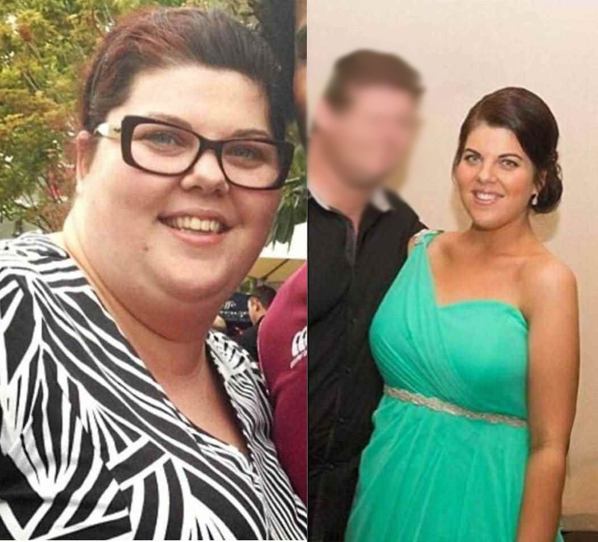

(Prof. Wagner) - Diätassistenten fürchten um ihre Jobs. Wird die neue Methode der Gewichtsabnahme Tausende von Menschen der Arbeit berauben? Herausragende Ernährungsspezialisten haben keinen Zweifel daran. Neben der Entwicklung einer natürlichen Schlankheitsformel, durch den deutschen Professor, gab es im Kampf gegen das Übergewicht einen lang erwarteten Durchbruch.
Schon über 14 Tausend Benutzer der Behandlung, haben in 28 Tagen im Durchschnitt 9 Kg abgenommen – ohne jegliche Anstrengung, sicher und ohne den Jo-Jo-Effekt. Als Ergebnis reduzierten sie das Risiko von Herzinfarkt und Schlaganfall um 185%, senkten das Niveau von schlechtem Cholesterin 15 Mal und retteten vor Atherosklerose. Sie haben wieder eine attraktive Silhouette, Selbstvertrauen und hervorragende Kondition erhalten. Wie das möglich ist?
Professor Erik Wagner (Experte für Molekularbiologie) beschloss, seine Frau von fortschreitendem Übergewicht und Komplexen zu befreien. Dies könnte der Beginn einer Revolution im Kampf gegen Übergewicht sein. Der Professor entwickelte in einem Jahr fortgeschrittener Laborforschungen eine natürliche, sichere und einfache zu verwenden Formel. Dank ihr hat die Frau des Professors in kurzer Zeit zusätzliche Kilos abgenommen und – wie sie stolz gesteht – “die Figur eines Models” gewonnen!
Carola Wagner - 121 kg (links) and 78 kg (rechts)
Medizinische Fachpresse hat die Formel bereits zur “Pionierleistung in der Diätetik” gekürt und Professor Wagner hat bereits mehrere renommierte Auszeichnungen für seine wissenschaftliche Entdeckung erhalten. Dank seiner Formel können selbst Menschen mit einem großen und langfristigen Übergewicht (unabhängig von ihren Ursachen) in einem Monat etwa 9 Kg verlieren – effektiv ohne zu fasten und Sport.
Wo liegen die Gründe?
Diese Worte werden von über 14.000 zufriedenen Anwendern, die sich bereits der natürlichen Schlankheitskur unterzogen und eine schlanke Figur erzielt haben, bestätigt. Daher haben wir uns entschlossen, eine bisher bekannte Diät zur Gewichtsabnahme unter die Lupe zu nehmen. Prüfen Sie genaue, warum sie nicht die gewünschten Ergebnisse erzielen. Hier sind die Schlussfolgerungen:
Die meisten Diäten werden von Amateuren geplant.
Um 2 Kg dauerhaft zu verlieren, muss man durchschnittlich 2,5 Monate hungern. Dies bedeutet, dass Sie einige Jahre benötigen, um auf das gewünschte Gewicht zu kommen. Sie müssen darauf verzichten sich selbst mit ihrer Lieblingspizza oder einem Dessert zu belohnen. Das liegt daran dass 98% aller Diät Programme von Amateuren zusammengestellt werden. Menschen die keine Ahnung von der Funktionsweise des Körpers, des Verdauungssystems und einer gesunden Ernährung haben. Diese Diäten sind schädlich für den Körper, gefährlich für die Gesundheit und völlig unwirksam.
Die Diät schwächt den Körper und verringert die Abwehrkräfte
Die Diät führt zu einem Mangel an Vitaminen und Spurenelementen. Der Körper verliert Energie, weshalb wir erschöpft, reizbar und schläfrig sind. Die Resistenz des Organismus gegen Viren und Bakterien nimmt drastisch ab, wodurch wir leicht an Krankheiten erkranken.
Diätetische Produkte sind gesundheitsschädlich
Lebensmittelhersteller locken Kunden mit “Light” -Produkten an. Leider enthalten sie, selbst wenn sie reich an Ballaststoffen sind, sehr viel Zucker. Auf der anderen Seite enthalten zuckerfreie Produkte krebserregendes Aspartam!
Diät bedeutet anhaltender Hunger, Verzichte und schlechtes Gewissen
Der ständige Kampf mit dem Hunger und der Verlust der Freude am Essen bleiben nicht aus. Dem gegenüber stehen Situationen des Heißhungers bei Familienfeiern oder Treffen mit Freunden die oft gefolgt sind von schlechtem Gewissen.
Die Diät verschwendet viel Geld
Durch die Betreuung eines Ernährungsberaters entstehen oft Kosten von mehr als 150€. Noch dazu kosten alle Diät- und “Light”-Produkte ein vielfaches mehr als normale Lebensmittel. Wenn wir unser Gewicht halten wollen müssten wir uns theoretisch unser ganzes Leben davon ernähren. Das ist auf Dauer sehr teuer.
Nach der Diät, kommt der Jo-Jo Effekt
Durch Hunger geschwächt fängt unser Körper automatisch an Energiereserven anzulegen, wodurch sich der Stoffwechsel immer weiter verlangsamt. Dies führt in der Folge zu einer Gewichtszunahme die größer ist als vor der Schlankheitskuhr.
Gerade deswegen ist die Schlankheitsformel von Prof. Wagner ein echter Durchbruch im Kampf um eine schlanke Figur
Die Schlankheitskur entzieht den Menschen Gesundheit, Energie und Geld. Kontinuierliches Zählen von Kalorien, Beachtung der Essenszeiten und Verzichte, Quälender Hunger, Müdigkeit und Zerstörung des Körpers, wir zahlen diesen riesigen Preis für … eine Enttäuschung, weil die Effekte normalerweise vernachlässigbar sind. Fast sofort entsteht der Jo-Jo-Effekt, der alle Anstrengungen und langanhaltenden Entsagen zerstört.
Die natürliche Schlankheitsformel von Prof. Wagner funktioniert ganz anders. Sie müssen auf nichts verzichten, sich an keine Speisepläne halten, oder darauf achten was und wann Sie essen. Die Fettverbrennung erfolgt automatisch. Wie von einem der Befragten beschrieben: “Sie verlieren Gewicht vom Sofa aust!” Darüber hinaus bringt die Behandlung den Stoffwechsel in Gang und beugt einem Jo-Jo Effekt dauerhaft vor. Und sie kostet jeden Tag weniger als eine Dose Cola!
Die Schlankheitsformel von Prof. Wagner ist bereits im Einzelhandel unter dem Namen Slimymed erhältlich. Die Formel ist in Form von Kapseln erhältlich, die mit viel Wasser getrunken werden sollten (was zusätzliche Flüssigkeit liefert, die für das Abnehmen wichtig ist). Die Verwendung ist absolut sicher, wie die zusätzlichen Untersuchungen des amerikanischen Forschungszentrums in Chicago belegen. Diese Studien zeigten auch, dass die Kur eine Wirksamkeit von über 98% aufweist. Dank ihr haben Menschen im Alter von 38-93 Jahren, in nur 28 Tagen durchschnittlich 9 Kg abgenommen. Unabhängig von Alter, Größe und Ursachen des Übergewichts.
Bei diesen Leuten begann der Körper schon einige Stunden nach der ersten Anwendung sich von Toxinen und Ablagerungen zu reinigen. Dadurch fiel der übermäßige Appetit weg und der Körper konnte in eine Phase der intensiven Kalorienverbrennung eintreten.
Diese Leute, begannen schon einige Stunden nach der ersten Anwendung, den Körper von giftigen Ablagerungen und Toxinen zu reinigen, dank denen sie übermäßigen Appetit unterdrückten und konnten in die Phase der intensiven Kalorienverbrennung eintreten. In den folgenden Tagen hörten die untersuchten Probanden auf, unter Stress zu naschen, und erlitten keine Hungerattacken mehr. Dann beobachteten sie von Tag zu Tag, wie die Waage weniger Kilogramm anzeigte, und der Umfang in der Taille, den Hüften und den Schenkeln um einige Zentimeter pro Tag weniger wurde!
Aber das ist noch nicht alles. Die Aufnahme an schlechtem Cholesterin und Zucker wurde reduziert. Die Probanden hatten, dank der Schlankheitsformel von Prof. Wagner, im Durchschnitt 3-mal mehr Energie und eine 5-mal bessere Motivation als zuvor.
1. Woche - Entschlackung von Darmablagerungen und Toxinen, Wegfall von Heißhunger, etwa 3kg weniger.
2. Woche - Weniger Hunger, Verbesserung des Stoffwechsels, Beschleunigung der Kalorienverbrennung und 2kg weniger.
3. Woche - Beschleunigte Fettverbrennung, Senkung der Aufnahme von Cholesterin und Zucker 2 Kg weniger.
4. Woche - 3-mal mehr Energie, Verbesserung des Stoffwechsels und Vorbeugung des Jo-Jo-Effekts, ca 2kg weniger.
“Noch vor Kurzem habe ich mich für die dicken Speckrollen geschämt und sie unter Schichten loser Kleidung versteckt. Ich habe viele Male versucht, Gewicht zu verlieren, ohne Erfolg. Ich ging sogar zu einem Ernährungsberater. Ich habe fast mein ganzes Gehalt dafür ausgegeben, aber es hat mir nicht geholfen. Ich musste von jedem Keks, jedem Glas Wein berichten. Sport? Wie soll ich, nach einem langen Arbeitstag, noch die Energie haben ins Fitnessstudio gehen? Und wer würde sich um den Haushalt, die Kinder und den Hund kümmern? Durch Zufall habe ich von Slimymed erfahren. Jetzt weiß ich, wenn ich diese Behandlung nicht benutzt hätte – ich den Fehler meines Lebens begangen hätte. Ich war fett wie eine Kuh, und nach 4 Wochen schon war ich schlanker als meine jugendliche Nichte. Ich nahm nur regelmäßig diese Kapsel. Meine Konfektionsgröße reduzierte sich von 44 auf 38, ich habe mein Selbstvertrauen zurückgewonnen und fühle mich pudelwohl. Meine Arbeitskollegen beneiden mich um meine schöne Figur. Ich kann Slimymed nur empfehlen!”
Die Wirksamkeit der Schlankheitsformel wurde von einem amerikanischen Forschungszentrum in Chicago zweifelsfrei nachgewiesen. Professor Wagner erhält ständig positive Bewertungen von prominenten Experten, sowie Preise und Auszeichnungen für wissenschaftliche und Forschungsleistungen.
Die gute Nachricht ist, dass Sie die Schlankheitsformel von Prof. Wagner Slimymed nur für kurze Zeit bis zu 50% günstiger erhalten können. Das Sonderangebot ist bis gültig. Das Angebot kann über die folgende Website abgerufen werden.
Nutzen Sie diese exklusive Möglichkeit und den günstigsten Preis für den Versand, mit freundlicher Genehmigung von Prof. Wagner.
* Dieses Sonderangebot endet am
Therese Funke
Und es wird gesagt, dass die Deutschen auf der Weltarena nicht erfolgreich sind. Eine großartige Leistung. Gut gemacht zu unserem Landsmann!
Julia Ramm
Ich profitierte von dieser Schlankheitsbehandlung, bekam die Teilnahme am Rabatt Club, es kostete so wenig Geld, und endlich habe ich abgenommen! Ich fühle mich wie neu geboren. Ich empfehle es von ganzem Herzen
Maria Gassner
Ich habe es auch versucht und abgenommen, trotz der genetischen Tendenz zu Übergewicht. Es ist so einfach, ich habe meine Metamorphose bereits auf meinem Blog beschrieben und empfehle es jedem.
Gertrude Domschat
My husband and I both need to lose weight. Already ordered it and we are going to try this out, thanks. - The Barrott family
Jennifer Jackson Mercer
Ich habe bereits viele Mittel benutzt, natürlich hat mir nichts geholfen, ich habe nur Geld verschwendet. Aber hier, ehrlich gesagt, ist es die erste Methode, die bei mir funktioniert hat. Ich benutze nur eine Woche, aber ich habe in der Nacht aufgehört zu essen und ich habe weniger Appetit. Ich esse weniger und gesünder und fühle mich so leicht. Und ich sehe nicht zu, dass ich dieses oder jenes nicht esse. Und ich habe über 4 kg abgenommen und Cellulite ist verschwunden, ich kann kaum die vierte Woche abwarten !!
Leandra Waldhaus
Ich habe Slimymed bereits angewendet und habe davon sehr profitiert. Ich benutze es nur für zwei Wochen, aber die Hosen sind zu locker für mich. Überprüfe dich selbst, denn ich habe noch keine negative Meinung über diese Methode der Gewichtsabnahme gesehen.
Nina Brunsmann
Ich habe 16 kg verloren. Vor 30 Tagen wog ich 78 kg und heute 62. Ich rate Ihnen, mit Zuschuss zu bestellen, solange er noch gilt.